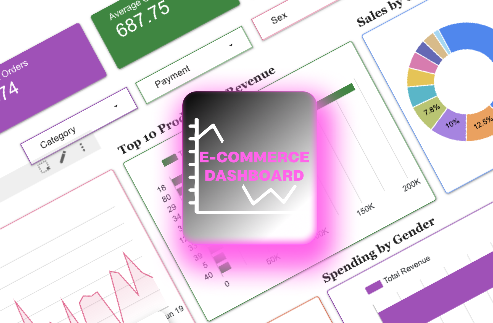

E-Commerce Dashboard
This project presents an end-to-end e-commerce analytics solution — from raw transactional data to an interactive,
insight-driven dashboard. Using Python (Pandas, NumPy) for data cleaning and enrichment, and Google Looker Studio
for visualization, the project showcases key business intelligence workflows for sales, customers, and product
performance analysis.
The dashboard provides a unified view of: Sales KPIs (Revenue, Orders, AOV), Customer demographics and behaviour,
Product performance across categories and brands.

Tech Stack

Python

Kaggle

MS Excel
Problem
- E-commerce data was scattered across multiple CSV files with inconsistent product and customer IDs.
- No unified system existed to track overall performance or key business metrics.
- Limited visibility into which products, customers, or categories drove the most revenue.
Goals
- Consolidate all raw datasets into one clean, analytics-ready model.
- Build a dynamic dashboard to monitor sales, customers, and product insights.
- Enable quick identification of top performers and growth opportunities.